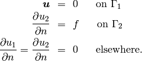
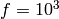
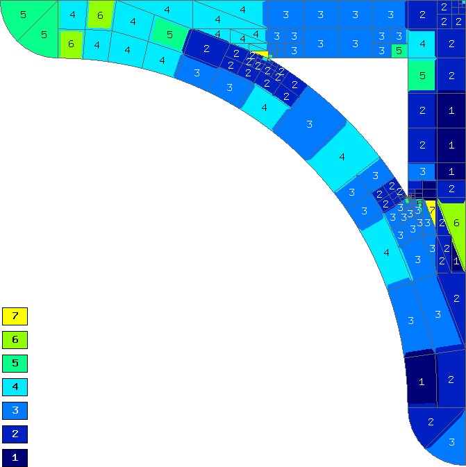

Bracket (Linear Elasticity)¶
Git reference: Example bracket.
We will use the equations of linear elasticity from example 08-system, but now we will view them as a coupled PDE system. Our domain is a bracket loaded on its top edge and fixed to the wall:

The dimensions are L = 0.7 m, T = 0.1 m and the force  N.

Then we solve on the uniformly refined mesh and either project the solution on the coarse mesh, or solve on the coarse mesh, to obtain the pair of solutions needed for error estimation:
// Assemble and solve the fine mesh problem.
info("Solving on fine mesh.");
RefSystem rs(&ls);
rs.assemble();
rs.solve(Tuple<Solution*>(&x_sln_fine, &y_sln_fine));
// Either solve on coarse mesh or project the fine mesh solution
// on the coarse mesh.
if (SOLVE_ON_COARSE_MESH) {
info("Solving on coarse mesh.");
ls.assemble();
ls.solve(Tuple<Solution*>(&x_sln_coarse, &y_sln_coarse));
}
else {
info("Projecting fine mesh solution on coarse mesh.");
ls.project_global(Tuple<MeshFunction*>(&x_sln_fine, &y_sln_fine),
Tuple<Solution*>(&x_sln_coarse, &y_sln_coarse));
}
The selector is created outside the adaptivity loop. We have two equations in the system, two meshes, two spaces, etc.:
// Calculate element errors and total error estimate.
info("Calculating error (est).");
H1Adapt hp(&ls);
hp.set_solutions(Tuple<Solution*>(&x_sln_coarse, &y_sln_coarse), Tuple<Solution*>(&x_sln_fine, &y_sln_fine));
hp.set_error_form(0, 0, bilinear_form_0_0<scalar, scalar>, bilinear_form_0_0<Ord, Ord>);
hp.set_error_form(0, 1, bilinear_form_0_1<scalar, scalar>, bilinear_form_0_1<Ord, Ord>);
hp.set_error_form(1, 0, bilinear_form_1_0<scalar, scalar>, bilinear_form_1_0<Ord, Ord>);
hp.set_error_form(1, 1, bilinear_form_1_1<scalar, scalar>, bilinear_form_1_1<Ord, Ord>);
double err_est = hp.calc_error(H2D_TOTAL_ERROR_REL | H2D_ELEMENT_ERROR_REL) * 100;
The following figures show the two meshes and their polynomial degrees after several adaptive steps:

Note that the meshes are slightly different, not only in polynomial degrees, but also in element refinements. This is possible in Hermes thanks to a technique called multi-mesh assembling which allows all components of the solution to adapt independently. In problems whose components exhibit substantially different behavior, one may even obtain completely different meshes.
Convergence graphs of adaptive h-FEM with linear elements, h-FEM with quadratic elements and hp-FEM are shown below.

The following graph shows convergence in terms of CPU time.

Comparison of the multimesh and single-mesh hp-FEM:


In this example the difference between the multimesh hp-FEM and the single-mesh version was not extremely large since the two elasticity equations are very strongly coupled and have singularities at the same points. For other applications of the multimesh hp-FEM see a linear elasticity model with cracks, a thermoelasticity example, and especially the tutorial example 11-adapt-system.